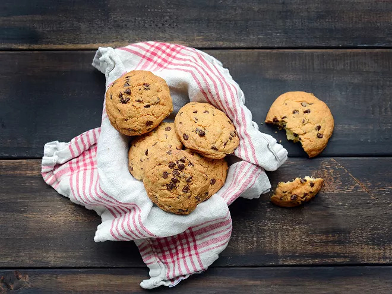

Cookies

Description
Quick to make and even quicker to devour, this cookie recipe is a surefire way to keep the kids busy on
rainy Sunday afternoons. Both crispy and soft, these generous American-style cookies
studded with chocolate chips are perfect for snack time. Keep them
safely stored in your cookie jar... or enjoy them straight out of the oven while they're still
warm!
Ingredients
- 100 g chocolate chips
- 1 egg
- 150 g flour
- 85 g powdered sugar
- 85 g butter
- 0.5 packet baking powder
- 1 packet vanilla sugar
Steps
- While your oven is preheating to 325°F (180°C), soften the butter (by microwaving it for a few seconds
or pressing it in your hands), then break it into small
pieces in a mixing bowl. Add the powdered sugar and egg, then mix with a spoon.
- Next, add the vanilla sugar and baking powder, then gradually add the flour, stirring
as you go so that the dough is smooth and even. Finally, stir in the chocolate chips.
- Line a baking sheet with parchment paper, then place
small mounds of dough formed using two teaspoons. Leave space between the cookies,
as they will rise and spread during baking.
- Bake the cookies for about 10 minutes. As soon as the edges begin to brown,
remove them from the oven, as they will continue to harden as they cool. Allow to cool before removing them
from the baking sheet. Enjoy warm or cold.
Home